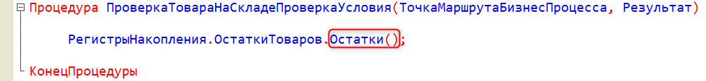
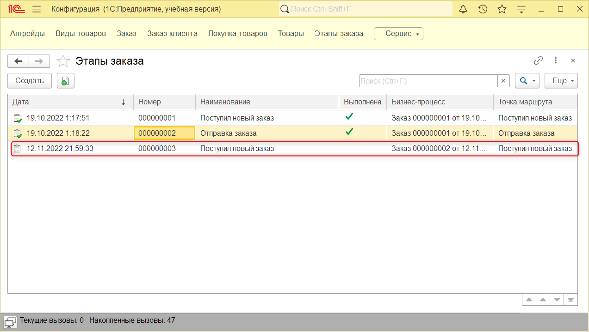

Тема занятия – создание алгоритма, который не позволит игроку продавать товары, если в заказе их больше, чем есть в наличии.
В рамках этого занятия выполним 2 задачи:
Сейчас в модуле объекта бизнес-процесса "Заказ" в процедуре "ПроверкаТовараНаСкладеПроверкаУсловия" реализован алгоритм, благодаря которому заказ всегда отправляется покупателю. Исправим данный алгоритм, чтобы итог формировался в зависимости от того, достаточно товара на складе или нет – это будет первая задача, которую мы выполним.
Перейдем в модуль объекта бизнес-процесса, нажав правой кнопкой мыши по бизнес-процессу "Заказ" в дереве конфигурации и выбрав в выпадающем списке "Модуль объекта" (рис. 6.1).
Рис. 6.1. Открытие модуля объекта
Очистим содержимое процедуры, при этом оставим саму процедуру, так как она связана с точкой условия, и начнем определять ее заново.
Чтобы получить возможность проанализировать остатки товара, необходимо обратиться к регистрам накопления. Это можно сделать программно, через механизм "РегистрыНакопления". После этого необходимо указать конкретный регистр – "ОстаткиТоваров".
Запустим режим пользователя без обновления конфигурации. Для этого необходимо открыть "Сервис" и в выпавшем меню выбрать "1С:Предприятие". В появившемся окне на вопрос об обновлении конфигурации выбираем "Нет" (рис. 6.2 – рис. 6.3).
Рис. 6.2. Запуск режима пользователя без обновления конфигурации
Рис. 6.3. Запуск режима пользователя без обновления конфигурации
После запуска режима пользователя посмотрим, как устроена физическая таблица регистра. Откроем вкладку "Сервис и настройки" и выберем "Функции для технического специалиста" (рис. 6.4). В открывшемся окне нажмем на плюсик рядом с регистрами накопления, чтобы развернуть список. Далее необходимо открыть регистр, щелкнув по его названию два раза левой кнопкой мыши (рис. 6.5).
|
|
Рис. 6.4. Сервис и настройки |
Рис. 6.5. Открытие регистра накопления в пользовательском режиме |
В данной таблице видно все записи о поступлениях и расходах товаров (рис. 6.6).
Рис. 6.6. Физическая таблица регистра накопления "Остатки товаров"
В таком формате не совсем удобно отслеживать текущий остаток товаров. Было бы лучше увидеть итоги сразу всех операций, а не каждую операцию по отдельности.
Закроем режим пользователя и продолжим работу в конфигураторе.
Чтобы получить остатки регистра накопления, обратимся к функции "Остатки".

Данная функция вернет таблицу по остаткам, потому что различных товарных позиций может быть много. Запишем ее в отдельную переменную "ОстаткиТоваров".

Далее необходимо найти в этой таблице данные по остаткам того товара, который продается в данном заказе. Поиск в таблице остатков будет осуществляться по товару, указанному в бизнес-процессе. Для этого создадим переменную "ИнформацияОТоваре", чтобы хранить результаты поиска по таблице.
В итоге в этой переменной может храниться как информацию об остатках товара, так и вовсе ничего. В таком случае это означает, что в регистре еще не было записи о данном товаре, значит, товар еще не был куплен. Реализуем проверку: если информации о товаре нет, тогда пользователь получит сообщение о том, что товара нет в наличии.
Для начала создадим само условие. В платформе "1С:Предприятие" предусмотрен тип данных на случай, если данные не удалось найти. Данный тип называется "Неопределено".
Чтобы вывести пользователю сообщение об ошибке, воспользуемся конструкцией "ВызватьИсключение". Само сообщение об ошибке указывается в двойных кавычках сразу после вызова конструкции.
Далее запишем информацию о том, что товара нет в наличии в реквизит "Итог" бизнес-процесса.
Так как товара нет в наличии, присвоим переменной "Результат" значение "ложь". При таком значении бизнес-процесс вернется в исходное положение.
После этого необходимо прервать процедуру. Используем для этого метод "Возврат".
Обновим конфигурацию базы данных и запустим пользовательский режим, чтобы проверить работоспособность данной процедуры.
Благодаря физической таблице регистра накопления известно, что корм для собак закончился. Поэтому для проверки процедуры создадим новый заказ на приобретение покупателем корма для собак.
Создадим новый заказ. В качестве товара укажем "Сухой корм", цена – 100, количество – 3, сумма – 300 и нажмем на кнопку "Стартовать и закрыть" (рис. 6.7).
Рис. 6.7. Создание нового заказа
После этого появилась новая задача в списке "Этапы заказа" (рис. 6.8).

Рис. 6.8. Список задач
При попытке выполнить данную задачу сработает алгоритм, и пользователь увидит ошибку (рис. 6.9).

Рис. 6.9. Выполнение задачи с ошибкой
Теперь рассмотрим другой случай: если товар имеется в наличии, но его недостаточно для продажи, например, когда клиент хочет купить 10 мятных шариков, а на складе осталось всего 3. Приступим к выполнению второй задачи и обработаем данный сценарий.
Закроем пользовательский режим и вернемся в конфигуратор.
Запишем новое условие в модуле объекта бизнес-процесса: если количество товара в бизнес-процессе больше, чем количество товара на складе, тогда необходимо вновь выводить ошибку пользователю.
Также необходимо изменить итог по заказу в соответствующем реквизите.
Затем присвоим переменной "Результат" значение "ложь" и прервем работу процедуры с помощью метода "Возврат".
Также напишем алгоритм работы при достаточном количестве товара.
Теперь обновим конфигурацию базы данных и запустим пользовательский режим.
Для проверки процедуры создадим заказ с заведомо большим количеством товаров. В качестве товара укажем "Мятный шарик", цена – 200, количество – 30, сумма – 6000. После ввода данных нажмем на кнопку "Стартовать и закрыть" (рис. 6.10).
Рис. 6.10. Создание нового заказа
После этого появился новый этап заказа. Перейдем к списку "Этапы заказа", откроем новую задачу и выполним ее (рис. 6.11).
Рис. 6.11. Выполнение задачи с ошибкой
В результате возникло сообщение о нехватке товара. Чтобы выполнить данный заказ, пополним количество товара на складе.
Для этого создадим новый документ "Покупка товаров". В качестве товара укажем "Мятный шарик", цена – 150, количество – 30, сумма – 4500 (рис. 6.12).
Рис. 6.12. Покупка товара
После этого вернемся к этапам заказа и выполним последнюю задачу (рис. 6.13). Затем отправим заказ клиенту, после чего бизнес-процесс завершится (рис. 6.14).
Рис. 6.13. Выполнение этапа заказа |
Рис. 6.14. Отправка заказа клиенту |
На этом шестое занятие окончено!
На этом занятии мы описали алгоритм, благодаря которому игрок теперь не сможет отправить заказ покупателю, если товара из заказа нет на складе – был реализован контроль отрицательных остатков.
На следующем занятии мы автоматизируем поступление заказов, а именно опишем алгоритм, который будет автоматически создавать новые заказы от покупателей со случайным товаром и случайным количеством.
Это нужно запомнить |
|
|
Чтобы получить данные из виртуальной таблицы регистра накопления, нужно сначала указать, с каким именно объектом вы будете работать, потом указать название конкретного регистра и после этого обратиться к виртуальной таблице по ее названию: "РегистрыНакопления.ОстаткиТоваров.Остатки()". Такая логика работы с данными и свойствами применима ко всем объектам конфигурации. |